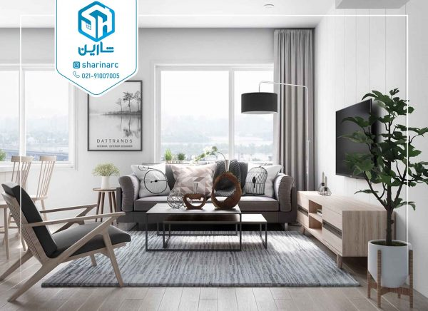
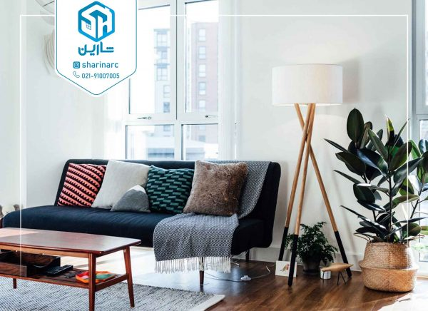
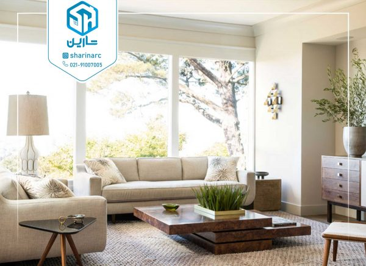

از فنگ شویی در قسمت های مختلف منزل برای چیدمانی صحیح و افزایش انرژی مثبت در سراسر منزل استفاده می شود. برای فنگ شویی اتاق خواب و فنگ شویی اتاق نشمین و فنگ شویی آشپزخانه، اصولی وجود دارد که باید رعایت شود و شما می توانید با رعایت این اصول چیدمانی کاربردی را در سراسر منزل خود داشته باشید. با به کارگیری اصول فنگ شویی اتاق نشیمن و یا سالن پذیرایی در طراحی این قسمت از منزل می توانید به احساسی خوب برسید. اتاق نشیمن و پذیرایی طبق معماری جدید امروز در یک راستا قرار دارند و با هم مرتبط هستند؛ پس باید از چیدمانی استفاده کنید تا با آن به خوبی بتوان فضای نشیمن از پذیرایی را تفکیک کرد. از این رو جهت آشنایی با اصول چیدمان این قسمت از خانه بر اساس آیین فنگ شویی در ادامه این مطلب همراه ما باشید.
اتاق نشیمن از مهم ترین بخش های منزل است که دکوراسیون آن باید صمیمانه و راحت باشد، اتاق نشیمن با مبلمان راحتی، تلویزیون و میز شکل می گیرد که نحوه چیدن آن ها بسیار اهمیت دارد. برای اینکه بتوانید به بهترین شکل اتاق نشیمن خود را طراحی کنید طوری که انرژی مثبت در آن موج بزند، باید از اصول فنگ شویی که در موارد زیر ذکر شده است بهره ببرید.
رنگ بهترین عنصری است که می توانیم از آن شروع کنیم، چون رنگ ها بیشترین تاثیر را به روی خلق و خو انسان ها می گذارند. به علاوه رنگ ها در فنگ شویی نیز بسیار اهمیت دارند، زیرا هر رنگ به یکی از عناصر فنگ شویی تعلق دارد. فنگ شویی بر این اصل استوار است که رنگ می تواند تاثیر عمیقی روی عملکرد مغزی و احساس افراد بگذارد. مثلا رنگ های تیره حس آرامش را در فرد ایجاد می کنند و رنگ های روشن انرژی را در فرد فعال نموده و او را برای انجام فعالیت، شاد و پر انرژی می کند. از استفاده بیش از حد رنگ نیز باید اجتناب کنید. نیازی نیست که تمام دیوارهای اتاق را با یک نوع رنگ، رنگ آمیزی کنید. اگر می خواهید از تمام مزایای یک رنگ استفاده کنید، می توانید کمی از آن را در فضای اتاق به کار ببرید. شما می توانید از یک رنگ طبیعی مانند کرم یا بژ با منابع نور، آثار هنری، یک قالیچه بومی یا بالش های محلی برای اتاق نشیمن خود استفاده کنید.
هوای گرفته و راکد و نور ضعیف، بزرگ ترین دشمن فنگ شویی در اتاق نشیمن هستند، پس تا آنجا که می توانید به آن هوای تازه و نور مناسب وارد کنید. باز کردن همه پنجرههای اتاق نشیمن به مدت حداقل نه دقیقه، یکی از روشهای فوق العاده آسان برای پاکسازی فضای اتاق شما میباشد (عدد ۹ در فنگ شویی عددی فرخنده بوده و به همین دلیل بیشتر از آن استفاده میشود). برای داشتن نور مناسب در دکوراسیون سالن پذیرایی بر اساس فنگ شویی، از چراغ هایی که از سقف آویزان هستند استفاده می شود، همچنین برای دلنشین تر کردن فضا و منتقل کردن حس آرامش، از آباژور های شیک و زیبا جهت قرار گیری روی میز و یا لامپ های پایه دار زمینی نیز استفاده خواهد شد.
مبلمان را طوری انتخاب کنید که دارای گوشههای تیز نباشند و مخصوصا میز وسط اگر گرد یا بیضی باشد، بهتر است. نحوه چیدمان آنها در اتاق نشیمن باید به هیچ عنوان پشت به در ورودی نبوده و از دیوار نیز فاصله کمی داشته باشند. همچنین اگر مبلهایتان را به شیوه L بچینید، باعث میشود تمرکز در مرکز بوده و مهمانان حواسشان به جاهای دیگر پرت نشود و به یکدیگر توجه کنند.
تلویزیون در خانههای ما مرکز توجه است، اما برای اینکه این قدرت جلب توجه آن بیشتر نشود بهتر است تلویزیون را در قسمت شرقی اتاق نشیمن قرار ندهید. شمال و غرب بهترین مکانها هستند، همچنین برای زیبا تر شدن این بخش از خانه، میتوانید دیوار پشت تلویزیون خود را رنگی متفاوت از سه دیوار دیگر نشیمنتان بزنید و یا با کناف کاری آن را از دیگر دیوار های خانه، متمایز کنید.
فنگ شویی به ایجاد تعادل و انرژی مثبت در منزل شما کمک میکند. اگر میخواهید اتاق نشیمن و پذیرایی پر از انرژی و نور داشته باشید اصول فنگشویی ذکر شده را در آن به کار ببرید. این اصول باعث ایجاد حس صمیمیت و راحتی افراد خانواده و همچنین دوستان و آشنایانی که با آن ها در ارتباط هستید میشود. جهت اجرای درست و صحیح اصول فنگ شویی در سالن پذیرایی و اتاق نشیمن می توانید از کارشناسان شارین مشاوره رایگان دریافت کرده و برای اجرای طراحی های مورد نظر خود از مجموعه ما کمک بگیرید. جهت کسب اطلاعات بیشتر در خصوص طراحی دکوراسیون داخلی خانه و بازسازی ساختمان خود می توانید از طریق شماره ۹۱۰۰۷۰۰۵_۰۲۱ با ما در ارتباط باشید.